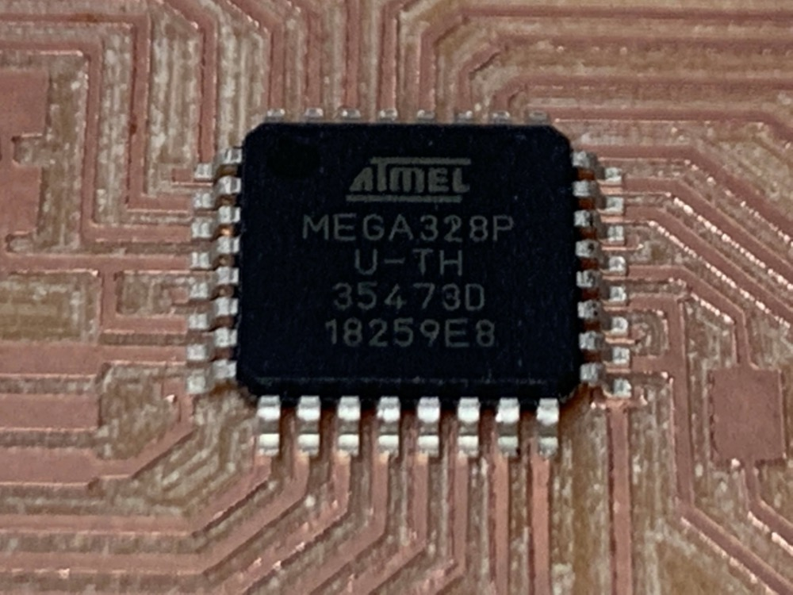
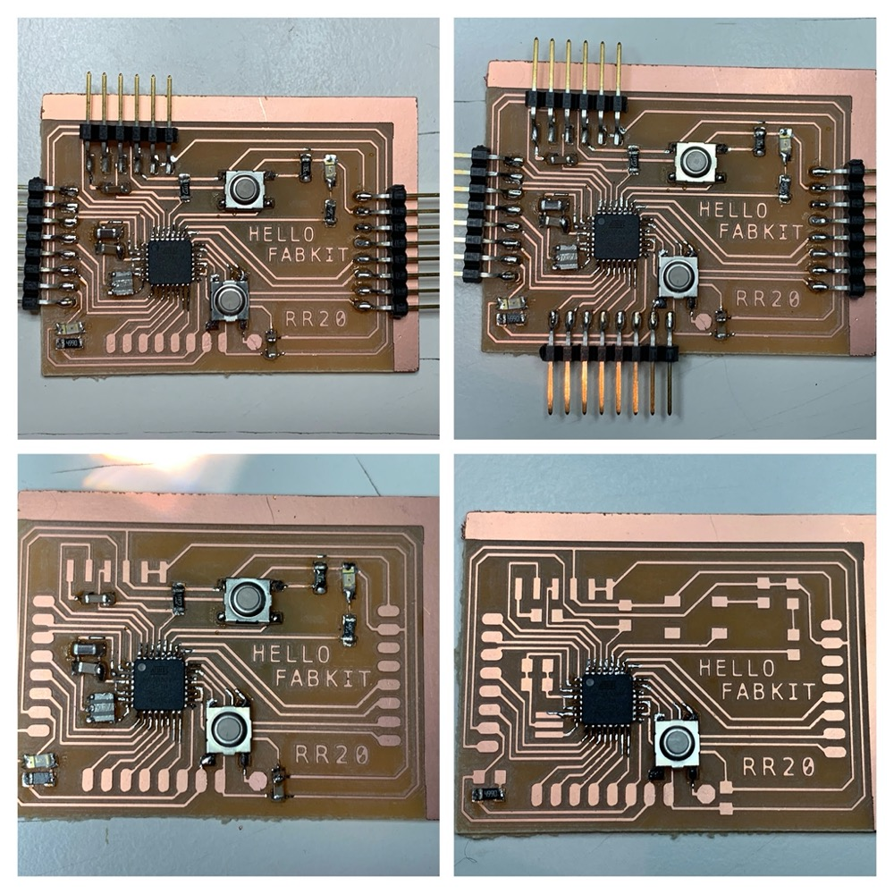
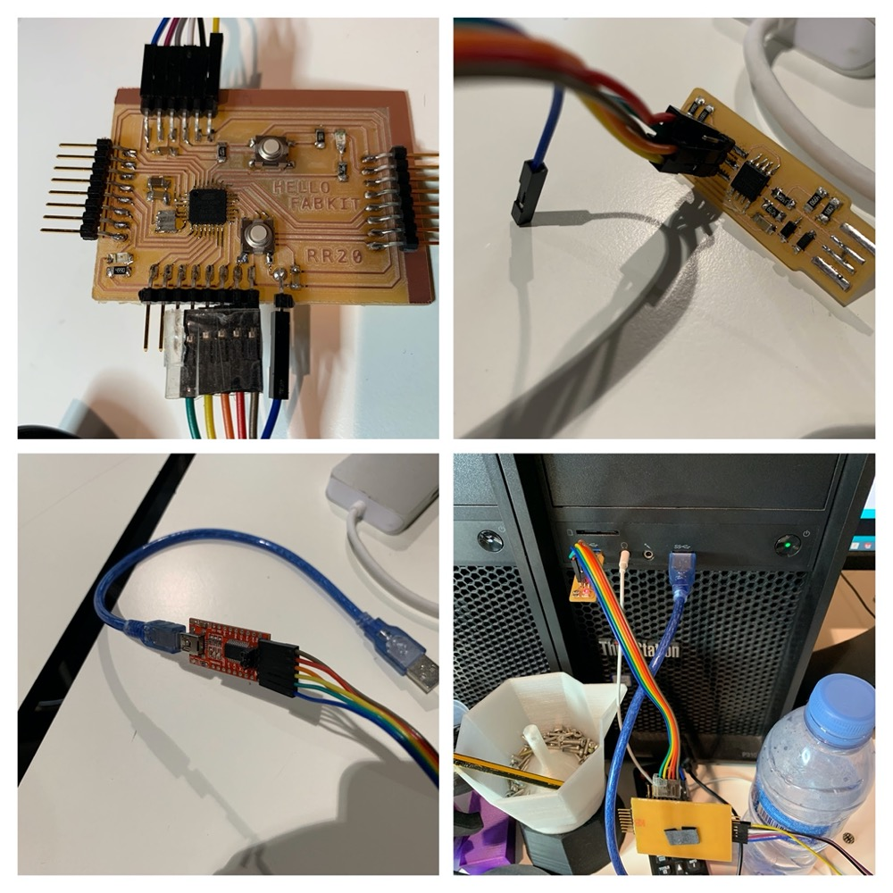

<!DOCTYPE html>
<html lang="en"></html>
<head>
  <meta charset="utf-8">
  <meta content="IE=edge" http-equiv="X-UA-Compatible">
  <meta content="width=device-width, initial-scale=1" name="viewport">
  <title> Rafael Rebolleda — Fab Academy 2020 Documentation</title>
  <!-- Google Fonts-->
  <link rel="stylesheet" href="https://fonts.googleapis.com/css?family=Catamaran&amp;display=swap">
  <link rel="stylesheet" href="../css/main.css">
</head>
<body> 
  <nav>
    <header>
      <ul>
        <li>Rafael Rebolleda</li>
        <li>ESNE (+ LEON)</li>
        <li>Madrid, Spain</li>
      </ul>
      <p class="bio">CX consultant and professor. Single, semi-remote Fab Acadeny student.</p>
    </header>
    <ol>
      <li><a class="red" href="../">About me</a></li>
      <li><a class="blue" href="../FP/">Final Project</a></li>
      <li><a class="blue" href="../DEV/">Project Development</a></li>
    </ol>
    <h1>Assignments</h1>
    <ol> 
      <li><a href="../W1/">Principles & Practices</a></li>
      <li><a href="../W2/">Computer Aided Design</a></li>
      <li><a href="../W3/">Computer Controlled Cutting</a></li>
      <li><a href="../W4/">Electronics Production</a></li>
      <li><a href="../W5/">3D Scan + Printing</a></li>
      <li><a href="../W6/">Electronics Design</a></li>
      <li><a href="../W7/">Computer Controlled Machining</a></li>
      <li><a href="../W8/">Embedded Programming</a></li>
      <li><a href="../W9/">Input Devices      </a></li>
      <li><a href="../W10/">Applications & Implications</a></li>
      <li><a href="../W11/">Output Devices</a></li>
      <li><a href="../W12/">Interface Programming</a></li>
      <li><a href="../W13/">Intellectual Property</a></li>
      <li><a href="../W14/">Networking</a></li>
      <li><a href="../W15/">Molding & Casting</a></li>
      <li><a href="../W16/">Wildcard: Waterjet CCC</a></li>
      <li><a href="../W17/">Mechanical & Machine Design</a></li>
    </ol>
  </nav>
  <main>
    <h1>W6: Electronics Design</h1>
    <p>For this assignment I discussed with my local instructor and my mentor Nuria at Fab Lab Leon the possibility to design a mix of a hello board and a fabkit that I could later use for my final project. The Hello Fabkit was born :)</p>
    <p>I based my work on <a href="http://fabacademy.org/archives/2015/doc/projects/fabkit-0.4.html">this document</a>, which described a fabkit v 0.4 that seemed to be very popular in previous Fab Academy cycles:</p>
    <p>I did however find many dead ends along the way. These are just a handful:</p>
    <h2>Group Assignment</h2>
    <p>I'm on my own so for the group assignment I leaned on my trusty multimeter. I use it all the time to check continuity and voltage.</p>
    <h2>The Design</h2>
    <p>The idea was to extend the previous design and make room for an extra button and LED that would play the role of the hello board. I was also struck by the number of sharp turns in the previous design, so I wanted to make softer turns if possible.</p>
    <p>The board is based around the ATMEGA 328P:</p>
    <p>And here we can see the layout:</p>
    <p>And from the layot to the traces. I added the text to the PNG directly, seeing that the type size would match the track's width.</p>
    <h2>Milling the board</h2>
    <p>We have a Roland MDX-40 at the lab, so this is what we're using.</p>
    <p>We didn't have the board propely leveled, so the first one failed:</p>
    <p>The second one came out alright:</p>
    <h2>Soldering</h2>
    <p>I did however ruined it early on by pulling the solder when it was attached to one of the chip's track. I decided to still use the board to practice and warm up a bit:</p>
    <p>Soldering the chip was the one thing that really worried me, as it was really hard to desolder. It seemed to me at the time that this was the most difficult component to solder. As we'll see, I had to do a few board and it ended up being almost the easiest.</p>
    <p>Anyway, my approach to chips so far had been to solder the tracks a bit and then try to put it on top. I decided to change the approach completely.</p>
    <p>First, I carefully lined up the chip:</p>
    <p>I would then quite simply tape it to the board:</p>
    <p>Then I would try a couple different approaches: just drop solder on top of it and then suck it out after the fact, which works mostly alright, or use a fine tip solerding iron and apply very thin solder to heat the junction of the track and the legs. It has worked mostly alright:</p>
    <p>I always check the boards for continuity before soldering, but that one ended up having some short, apparently below the chip. I had a couple of spare ones, so I went with a new board. </p>
    <p>Now, the thing that has been the most painful to solder, BY FAR, is the resonator. I tried adding solder below and on to the tracks... ultimately adding a bit of soldering iron to the sides and heating that as a proxy was the best approach.</p>
    <p>I continued soldering this board:</p>
    <p>Unfortunately, I made a mistake a put a 20 MHz resonator instead o 8 Mhz. Tried to desolder it, but damaged the tracks very badly and we couldn't get them back, so I went with a third board. I still had to recover the header pins, because I didn't have enough for a new board and the pandemic made it very slow to order. It proved really hard to desolder without blowing the tracks. </p>
    <p>Resoldering these new pins on the new board was more troublesome thah I expected, amd I learned to change the way I prepare the board for soldering. I used to lay down solder on the pads before installing components, but I've found that with surface mount components, the solder is too "bumpy" and irregular. After all the practice with these boards, now I lay down solder maybe for one side of the component (say a resistor) but leave the other one clean, and solder it afterwards. These way it's much easier to lay them flat. </p>
    <p>So, as I was saying, resoldering some of these header pins had two issues: excess of existing solder would short other tracks nearby and was very hard to pump out, and the "bumps" would leave some pins floating in the air. It took a while to debug the latter:</p>
    <p>So, here's the final board with a couple of fixes:</p>
    <ul> 
      <li>A patch cable to fix a broken track below the header pins</li>
      <li>Another track had to be "rebuilt" with a piece of cable and solder on the top-right corner of the top button</li>
    </ul>
    <h2>Burning the bootloader</h2>
    <p>Initial programming was done with <a href="../W4">the FabISP created in Electronics Production</a> together with the FTDI.</p>
    <p>These are the settings that worked on my board to burn the bootloader:</p>
    <p>Once the bootloader was burned, I uploaded a simple double blink test:</p>
    <video src="double_blink.mp4" autoplay loop muted controls></video>
    <h3>Files</h3>
    <ul>
      <li><a href="hello_fabkit.zip">Eagle Project</a></li>
    </ul>
  </main>
  <footer>
    <hr>
    <p><a rel="license" href="http://creativecommons.org/licenses/by-nc/4.0/"></a><br />This work is licensed under a <a rel="license" href="http://creativecommons.org/licenses/by-nc/4.0/">Creative Commons Attribution-NonCommercial 4.0 International License</a>.</p>
  </footer>
</body>